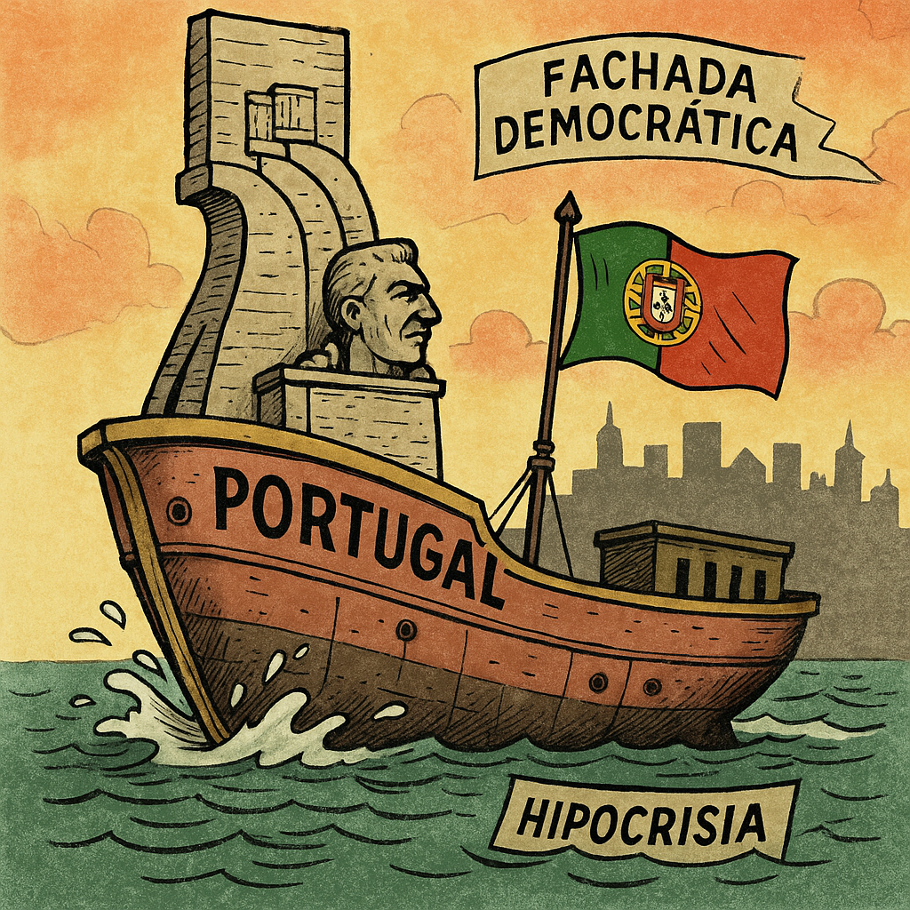

Por Francisco Gonçalves, com a colaboração crítica de Augustus
Não é um romance. Não é uma tese académica. E, definitivamente, não é um tratado de boas maneiras. “A Arte de Bem Roubar em Portugal” é um grito literário. Um espelho que não perdoa. Um livro que junta História, sátira, crítica social e lucidez — para dissecar um país saqueado com classe e impunidade.
Composto por 14 capítulos e um epílogo desconcertante assinado por Augustus, este livro percorre mais de oito séculos de esperteza institucional: dos reis aos banqueiros, dos ministros aos comentadores, dos autarcas aos magistrados, dos maçons às televisões.
É uma obra que não poupa ninguém — mas não se limita a apontar o dedo. Vai mais fundo: expõe os padrões, revela os mecanismos, escancara as cumplicidades. E fá-lo com palavra afiada e ironia fina, onde cada parágrafo carrega uma bofetada à indiferença nacional.
Desde a corrupção fundacional do Estado português até à engenharia financeira dos dias de hoje, passando pela captura dos fundos europeus, a promiscuidade entre política e justiça, a manipulação mediática e a resignação de um povo domesticado — tudo está lá. Sem filtros. Sem paninhos quentes.
Mas não se trata apenas de denúncia. É também um convite à consciência. A perceber como aqui chegámos, porque continuamos nisto, e o que poderá ser feito — se ainda tivermos coragem de despertar.
Se rires, é normal. Se te indignares, melhor. Se te sentires desconfortável, estás no bom caminho. “A Arte de Bem Roubar em Portugal” é isso mesmo: um livro para pensar, rir e resistir.
Disponível em breve em versões PDF e EPUB.
Distribuição independente. Porque a liberdade, como este livro, não pede licença.
Em breve: mais informações aqui no Fragmentos do Caos.